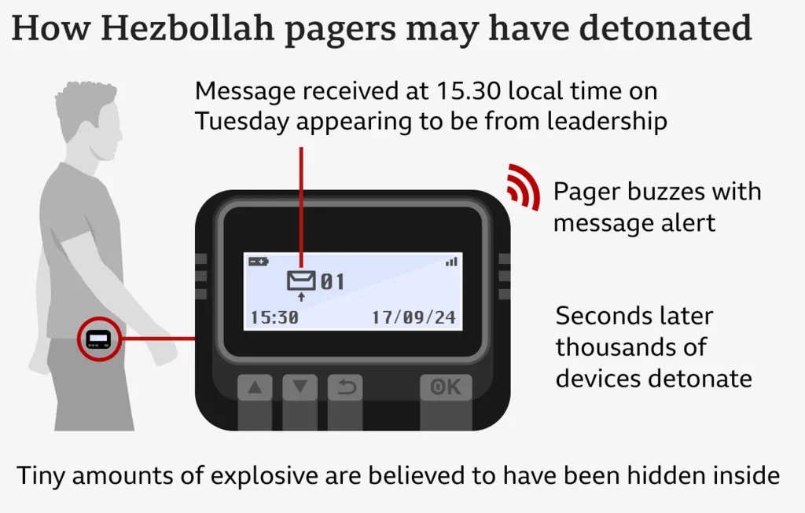

Pagers Yang Digunakan Anggota Hezbollah Meledak Secara Bersamaan
Sebanyak 32 orang meninggal dan sekitar 2.800 lainnya terluka setelah 3.000 pager dan walkie talkie meledak secara bersamaan di hampir seluruh wilayah Lebanon pada Selasa (17/9) dan Rabu (18/9). Peristiwa ini bermula dari ledakan pager yang sebagian besar dimiliki oleh kelompok milisi Hizbullah. Menurut laporan Reuters, ledakan tersebut terjadi pada Selasa sekitar pukul 15.30 waktu setempat dan berlangsung selama satu jam.
Penyebab Puluhan Pagers Meledak Secara Bersamaan.
Penyebab "pager" meledak bersamaan Hizbullah menyampaikan, pihaknya sedang melakukan investigasi keamanan dan ilmiah terhadap penyebab ledakan tersebut. Sumber-sumber diplomatik dan keamanan berspekulasi, ledakan mungkin disebabkan oleh ledakan baterai dari pager karena terlalu panas. Dilansir dari Channel News Asia, beberapa ahli berspekulasi, Israel telah menyusup ke rantai pasokan pager Hizbullah dan menyebabkan ledakan
